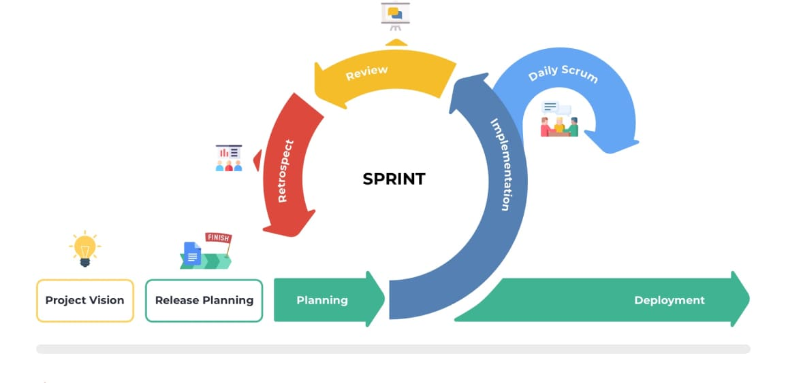

Agiilne tarkvaraarendus on üldmõiste, mis hõlmab tarkvara arendamise lähenemisviise, mis peegeldavad väärtusi ja põhimõtteid,
milles Agile Alliance 2001. aastal kokku leppis.
Mis etapid seal on?
Scrumi etapid on Plaanimine, implementeerimine, Ülevaatamine ja tagasivaatamine
Agiilse arendusmudel lähenemisviisid
BDD (Behaviour driven development) - BDD on protsess, mille käigus DSL-i struktureeritud loomuliku keele laused teisendatakse käivitatavateks testideks
DDD (Design driven development) - Disainipõhine arendus seab esikohale kasutajakogemuse, muutes disaini järelmõttest toote loomisel juhtivaks jõuks.
DDD (Domain driven development) - Valdkonnapõhine disain on tarkvara disaini lähenemisviis, mis keskendub
tarkvara modelleerimisele, et see vastaks valdkonna ekspertide sisendile.
SD (Secure by Design)- Secure by design on küberturvalisuse ja süsteemide inseneri kontseptsioon, mis nõuab turvalisuse integreerimist
süsteemidesse algusest peale, mitte järelmõttena.
TDD (Test driven development) - Testipõhine arendus on koodi kirjutamise viis, mis hõlmab automatiseeritud ühikutaseme testi kirjutamist, mis ebaõnnestub,
mille järel kirjutatakse piisavalt koodi, et test saaks läbitud
ATDD (Acceptance test driven development) - Vastuvõtutestidel põhinev arendus on arendusmetoodika, mis põhineb äriklientide, arendajate ja testijate vahelisel suhtlusel.
CTDD (Continuous test driven development) - Pidev testipõhine arendus on tarkvaraarenduse tava, mis laiendab testipõhist arendust automaatse testimise abil taustal,
mida mõnikord nimetatakse pidevaks testimiseks.[2]
Specification by Example - Näitepõhine spetsifikatsioon on koostööl põhinev lähenemisviis nõuete määratlemisele ja tarkvaratoodete ärikesksete funktsionaalsete
testide tegemisele, mis põhineb nõuete jäädvustamisel ja illustreerimisel realistlike näidete, mitte abstraktsete väidete abil.
DDD (Data driven development) - Andmepõhine programmeerimine on programmeerimisparadigma, kus programmilaused kirjeldavad
sobitatavaid andmeid ja vajalikku töötlemist, mitte ei määratle sammude jada.
DOD (Data oriented design) - Andmepõhine disain on programmi optimeerimise lähenemisviis, mida
motiveerib protsessori vahemälu tõhus kasutamine ja mida sageli kasutatakse videomängude arendamisel.
Milline näeb välja arendusmudel joonisena?

Mis on arendusmudeli tähtsaim omadus,miks?
Agiilse arendusmudeli tähtsaim omadus on selle paindlikkus
Võta arendusmudel kokku heade ja veade tabelina
Head
Vead
Paindlik
Ei ole efektiivne suurtes firmades
paindlikuse tõttu on võimalik teha muudatusi, kui on neid vaja
Projektis võib muutuda toimunu jälgimine keeruliseks